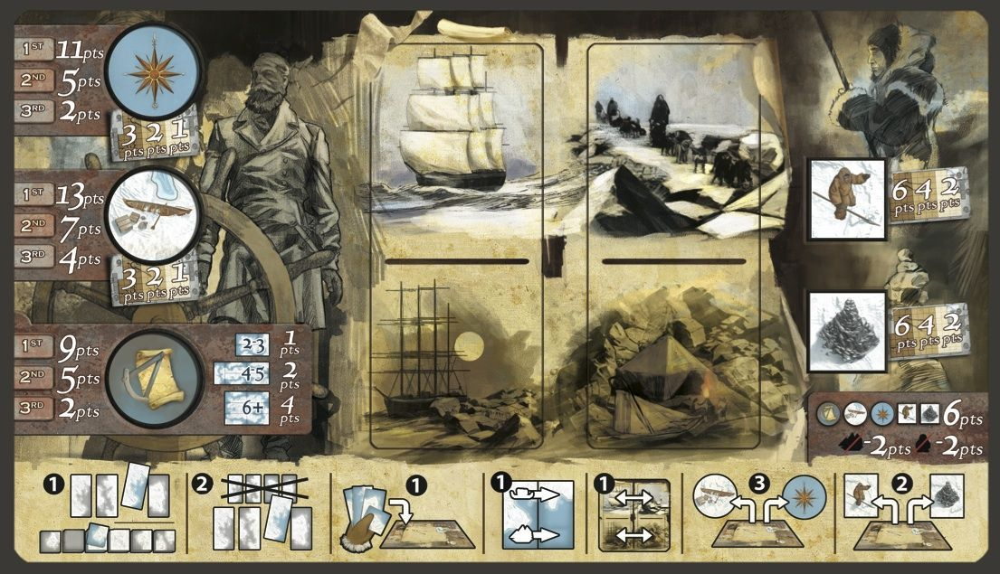

Northwestpassage
Board Game Arena 官方规则文档

Looking for the Franklin Expedition
In 1845, Sir John Franklin led an expedition on behalf of the British Royal Navy to find and explore the last portion of the Northwest Passage. They sailed into unknown waters, and no-one ever heard from them again... Players must venture into these hazardous Arctic waters in order to discover Franklin’s fate and succeed where he failed: by finding the Northwest Passage.
In the game, prestige is awarded for exploring islands and straits, getting information from Inuits or Cairns about the Franklin Expedition, finding shipwrecks of the expedition, and for being among the first to find their way up to the Northwest Passage and back to Groenland. The player with the most Prestige points at the end of the game is the winner. In case of a tie, the first tied player to have returned to Greenland is the winner.
Game Cycle
The game is divided into ten rounds. At the end of each round, the sun moves one spot counter-clockwise. Water above the sun is now ice, and water below is now sea.
During one round, each player will take up to 7 actions, in turn.
Actions can be taken either from the ship, using crewmen on the ship, or from the sled, using crewmen on the sled.
During one turn, one player can play one or more actions. However, all additional actions (beyond the first one) will cost one more crewman than normal. In order to stop playing more actions during one turn, click the blinking [End Turn] at the top of the screen.
At the end of the round, all used Crewmen move back to «Available».
The next turn order is the order in which players used their last crewmen (or passed). This is shown by the turn order markers at the top left of the board.
Actions
Draw a tile
Cost: 1 Crewman
<Click on the chosen tile at the top of the board.>
Refresh tiles and Draw
Cost: 2 Crewmen
<Click on the "Renew deck" icon.>
The player MUST:
- Refresh: all large tiles available on the board are replaced with four new tiles which are randomly drawn from the reserve. The replaced tiles are placed back into the reserve.
- Draw a tile: they take either a large or a small Exploration tile and adds it to their personal reserve.
Place a tile
Cost: 1 Crewman
<Click on the tile from your hand, rotate it or flip it as fit, and click on the white marker on the board.>
Take a tile from your personal reserve and place it on the board with the following conditions:
- The new tile must be placed in line with the black grid on the board.
- The new tile must be placed, with sides touching, next to the tile of your current location (either Ship or Sled, depending on which one executes this action).
- The land and sea areas of the new tile must correspond with all land and sea tiles of adjacent tiles (both orthogonally and diagonally).
If, by placing a tile, a player creates a space the size of a small Exploration tile which is surrounded on all sides by tiles, a matching small Exploration tile is taken from the reserve and placed to fill the empty space.
An island is complete when the land areas of at least two tiles are completely surrounded by water or the edge of the board. In case a player completes one or several islands, they get one Cartography token, and Prestige points according to the size of the island.
Transfer Crew
Cost: 1 Crewman
<Click on the back arrows on the player board>
Crewmen are moved from/to the ship/sled, thus deploying or taking back the sled into the ship. Taking back crewmen in the ship can only happen if the sled and ship are on the same tile. Both active and resting crewmen can be transferred.
Movement
Cost: 1 Crewman
<Click on the ship or sled, then on its destination.>
Ship Movement: The player moves their ship onto one adjacent tile linked to the tile it currently occupies by a sea passage.
Sled Movement: The player moves their sled onto one adjacent tile linked to the one it currently occupies by a land passage. The Sled cannot cross the sea unless it is frozen.
Multiple Ships and Sleds can be on the same tile.
A frozen tile is unreachable for a ship. If a ship, due to a season change, finds itself in frozen waters, the ship is blocked in and will not be able to move until the thaw. A frozen tile is considered to be entirely composed of land, so a Sled can move freely on it.
Explore a Franklin site or a Strait
Cost: 3 Crewmen
<Click on the bonus chip.>
1 prestige point is awarded for the discovery multiplied by the zone multiplier (x1 / x2 / x3), and additionally, points are awarded at the end of the game for the players having the most bonuses of a given type (see tooltip).
Discover an Inuit or a Cairn
Cost: 2 Crewmen
<Click on the bonus chip.>
2 prestige point is awarded for the discovery multiplied by the zone multiplier (x1 / x2 / x3).
Pass
A player can choose to Pass and take no action during their turn, even if they still have available Crewmen. In this case, the player cannot take any more actions during this round. If a player has no available Crewmen, they automatically pass.
End of the Game
The game ends either: at the end of the Action Phase of the tenth round or if all of the Expeditions have returned to Greenland.
In addition to the point earned during the game, players receive more Prestige points based on the tokens they picked up along the way.
Exploration Points:
Point are awarded to the player(s) with the most, second most, and third most Shipwrecks, Straits, and Cartography tokens. The point distribution is 13, 7, 4 for Shipwrecks; 11, 5, 2 for Straits; and 9, 5, 2 for Cartography.
Set Points:
Each set is composed of one token of each Discovery type – one Inuit, one Cairn, one Shipwreck, one Strait, and one Cartography token. Each set gives a bonus of 6 prestige points.
Abandonment Penalty:
Each Sled and/or Ship which did not return to Greenland before the end of the tenth Exploration season is lost. When a Ship or a Sled is lost, all of the crewmen in the corresponding column are lost with it. Every lost Ship and/or Sled gives a penalty of -2 Prestige points for each corresponding lost Crewman. An abandoned ship gives a penalty of -2 Prestige points.